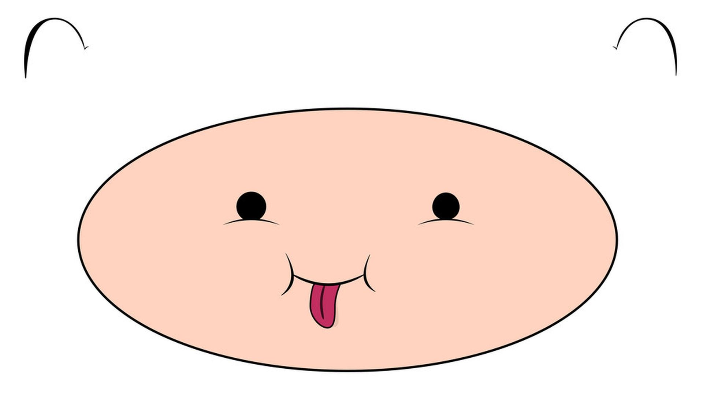

Este es el sitio oficial de MenteS-TEAM, donde compartimos ideas, proyectos y creatividad.
*Añadir misión
Betty, I won't make assumptions
About why you switched your homeroom but
I think it's 'cause of me
Betty, one time I was riding on my skateboard
When I passed your house
It's like I couldn't breathe
You heard the rumors from Inez
You can't believe a word she says
Most times, but this time it was true
The worst thing that I ever did
Was what I did to you
But if I just showed up at your party
Would you have me?
Would you want me?
Would you tell me to go fuck myself?
Or lead me to the garden?
In the garden would you trust me
If I told you it was just a summer thing?
I'm only seventeen, I don't know anything
But I know I miss you
Betty, I know where it all went wrong
Your favorite song was playing
From the far side of the gym
I was nowhere to be found
I hate the crowds, you know that
Plus, I saw you dance with him
You heard the rumors from Inez
You can't believe a word she says
Most times, but this time it was true
The worst thing that I ever did
Was what I did to you
But if I just showed up at your party
Would you have me?
Would you want me?
Would you tell me to go fuck myself?
Or lead me to the garden?
In the garden would you trust me
If I told you it was just a summer thing?
I'm only seventeen, I don't know anything
But I know I miss you
I was walking home on broken cobblestones
Just thinking of you
When she pulled up like
A figment of my worst intentions
She said: James, get in, let's drive
Those days turned into nights
Slept next to her, but
I dreamt of you all summer long
Betty, I'm here on your doorstep
And I planned it out for weeks now
But it's finally sinkin' in
Betty, right now is the last time
I can dream about what happens when
You see my face again
The only thing I wanna do
Is make it up to you
So I showed up at your party
Yeah, I showed up at your party
Yeah, I showed up at your party
Will you have me?
Will you love me?
Will you kiss me on the porch
In front of all your stupid friends?
If you kiss me, will it be just like I dreamed it?
Will it patch your broken wings?
I'm only seventeen, I don't know anything
But I know I miss you
Standing in your cardigan
Kissin' in my car again
Stopped at a streetlight
You know I miss you
*Añadir visión
*Añadir valores